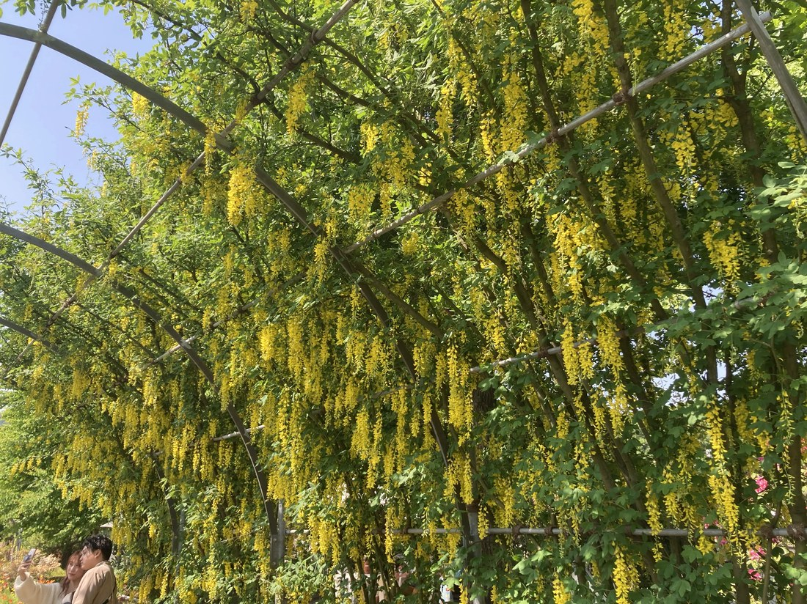

地図を読み込んでいるよ…
🔍 写真も地図も、押しているあいだ拡大して見られるよ（スマホは指を置いてすこし待ってね）。
🌍 の地図＝この子がもともと自生している場所を緑に。ヨーロッパ中部〜南部の山地が原産。日本では観賞用に育てられ、棚に仕立てて“黄花藤”として楽しむ。写真は足利フラワーパーク（りょうさんの写真）。
⭐ヨーロッパ中部〜南部の山地が原産——アルプスやバルカン半島あたりの木だよ。⚠地図は国ごと塗っているけど、もとはその山地など一部の子。⚠日本は塗っていない——キングサリは観賞用に育てられている外来の花木で、日本はふるさとじゃない（足利フラワーパークで“きばな藤”として咲いていた）。⚠全体が有毒（cytisine）なので、さわっても口に入れないでね。
⚠ 地図は国（日本と中国だけ県・省）までしか塗れないから、ほんとうの分布より広く見えていることがあるよ。地図はだいたいの場所。正確なところは、上の文を見てね。
キングサリ（金鎖）
Laburnum anagyroides
別名 · キバナフジ（黄花藤）／ゴールデンチェーン／英名 golden chain tree／ 原産 · ヨーロッパ中南部／ 見どころ · ⭐藤そっくりの黄色い房・でも別属（三出複葉）
マメ科 · Fabaceae（キングサリ属 Laburnum）── 藤とは別属の“そっくりさん”・マメ目
燻太さんの見立て「藤棚のような…藤色でないから別の栽培品種かな？」──鋭い。じつは藤とは別属の“そっくりさん”だよ。
名前と学名の由来 ── 金の鎖・黄花の藤
- ⭐属名 Laburnum（ラブルヌム） は、このキングサリ属を指す古いラテン名。種小名 anagyroides は「Anagyris（マメ科の植物）に似た」。
- ⭐和名「キングサリ（金鎖）」＝黄色い花が、鎖のように連なって垂れ下がることから。
- ⭐別名「キバナフジ（黄花藤）」・英名「golden chain（金の鎖）」＝藤のように咲く黄色い花だから。名前からして「藤のようで、藤じゃない」と言っているね。
この植物のこと
- マメ科キングサリ属の落葉小高木。⭐図鑑で初めてのキングサリ属だよ。ヨーロッパ中部〜南部の山地生まれ。
- ⭐⭐藤にそっくり、でも藤じゃない：黄色い蝶形花（マメの花）が、長い総状花序で垂れ下がる姿は、まさに“黄色い藤”。でも本物の藤（Wisteria）とは別属なんだ。⭐見分けは葉：藤は羽状複葉（小葉が11〜19枚）／キングサリは三出複葉（小葉3枚・クローバー状）。127 シロバナフジと、葉をくらべてみてね。
- ⭐⚠全体が有毒：主な毒は cytisine（シチシン）＝ニコチンに似たはたらきをする成分で、⚠とくに種子が危険。⭐でも同じ成分が、東欧では禁煙補助薬として長く役立ってきた——毒と薬は紙一重だね。⚠だから、さわっても口に入れない。
- 足利フラワーパークでは、「きばな藤（黄花藤）のトンネル」として棚に仕立てられているよ。
コラム ── 「そっくりさん」ふたたび（同じ科・別属）
- ⭐燻太さんの「藤色でないから、別の栽培品種？」——とてもいい問い。答えは「別の品種」ではなく「別属のそっくりさん」。
- キングサリ（Laburnum）と藤（Wisteria）は、同じマメ科だけど、別の属。花の形（蝶形）と、垂れ下がる総状花序は似ているけれど、葉（三出／羽状）と、毒の有無でちがう（藤は無毒、キングサリは有毒）。
- 📌図鑑の「そっくりさん」連載：121 クレオメ（アブラナのそっくりさん＝別科）、117 トレニア（シソのそっくりさん＝別科）…そして今回は「藤のそっくりさん＝同じ科の、別の属」。⭐“どのくらい近いか”は毎回ちがう——今回は「同じ科で、別の属」だよ。
- ⭐127 シロバナフジ（本物の藤）と見くらべよう——葉のかたちと、毒の有無で。
同定について
- ⭐三出複葉（小葉3枚）＋黄色い垂れる蝶形花＋足利の“きばな藤トンネル”——この組み合わせは、キングサリならでは。藤（羽状複葉）とは、葉で区別できる。
- ⚠「キバナフジ」の名にだまされない：名前は“藤”だけれど、属がちがう別の木。名前が似ていても、体のつくり（葉）を見れば分かるね。
物語 ── 金の鎖のトンネル
足利フラワーパークは、紫の藤で有名な庭。その一角に、黄金色の鎖が、いくつも垂れ下がるトンネルがあるんだ。りょうさんが、紫の藤と並ぶ、この黄花のトンネルをくれたよ。紫の本物の藤と、黄色いそっくりさん。並べて見ると、「似ているけれど、ちがう」がよく分かる。名前にひっぱられず、葉を見て確かめる——燻太さんの「別の品種かな？」という小さな引っかかりが、いい発見につながったね。
参考：三河の植物観察「キングサリ」（マメ科キングサリ属・ヨーロッパ中南部原産／三出複葉／黄色い蝶形花が総状に垂れる）／みんなの趣味の園芸「キングサリ」（別名キバナフジ・ゴールデンチェーン／落葉高木／5〜6月開花）／植木ペディア「キングサリ」（全株にシチシン（cytisine）を含み有毒・とくに種子）